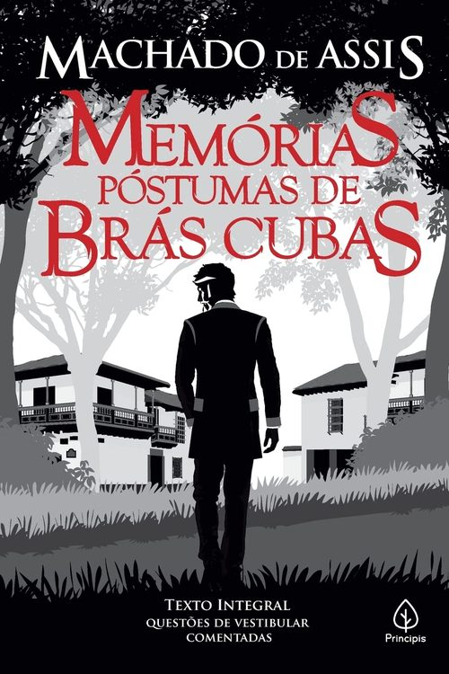
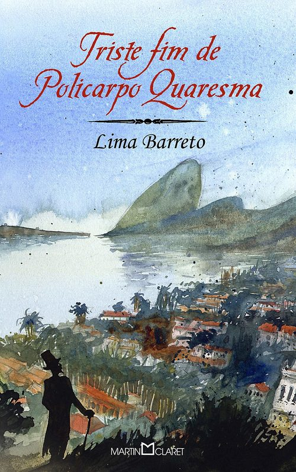

Dom Casmurro

Romance de Machado de Assis narrado por Bento Santiago, o Bentinho, que relembra a própria vida e o ciúme que sentia de Capitu.
Saiba mais
Autor: Machado de Assis
Publicação: 1899
Romance de Machado de Assis narrado por Bento Santiago, o Bentinho, que relembra a própria vida e o ciúme que sentia de Capitu.
Autor: Machado de Assis
Publicação: 1899

Narrado por um defunto autor, o romance é considerado o marco inicial do Realismo no Brasil.
Autor: Machado de Assis
Publicação: 1881

Obra do Naturalismo brasileiro que retrata a vida coletiva dos moradores de um cortiço no Rio de Janeiro.
Autor: Aluísio Azevedo
Publicação: 1890

Romance indianista que conta a história de Iracema e do português Martim, ligada às origens do Ceará.
Autor: José de Alencar
Publicação: 1865

A trajetória do major Policarpo Quaresma, um nacionalista idealista, no início da República.
Autor: Lima Barreto
Publicação em livro: 1915

Obra que retrata a Guerra de Canudos, no sertão da Bahia, unindo relato histórico, geografia e análise social.
Autor: Euclides da Cunha
Publicação: 1902